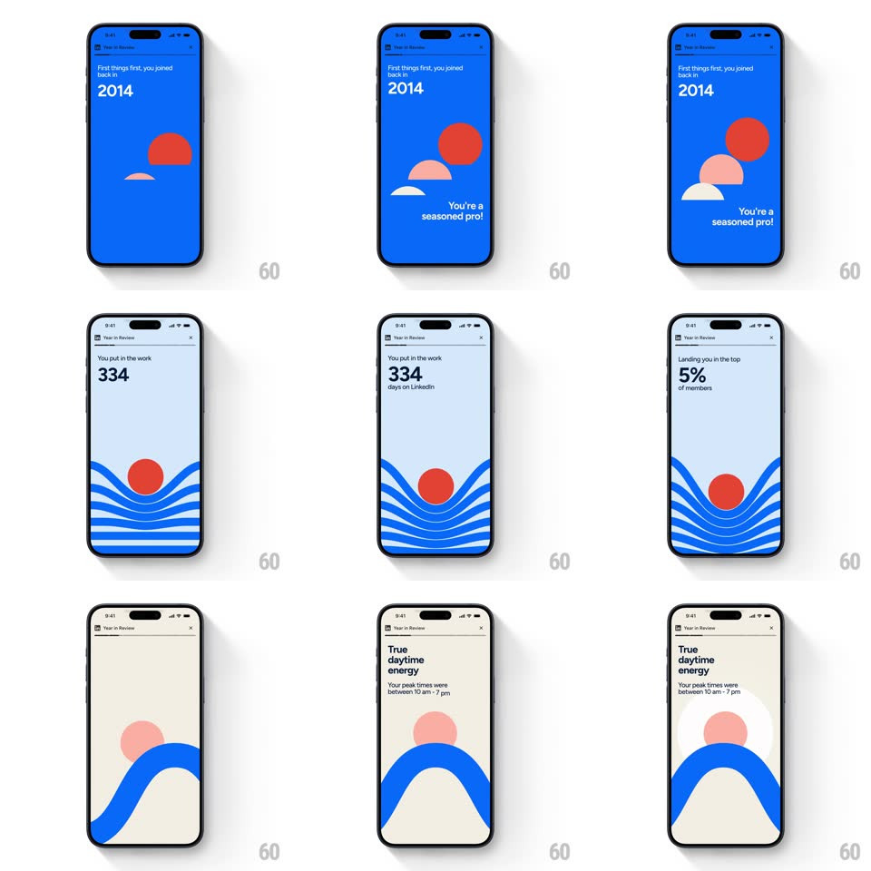

Media
Frame-by-frame

Rebuild this animation 1:1: LinkedIn's Year in Review story sequence - bold stat screens where geometric illustrations (sun, waves, arch) layer in behind staggered headline reveals.

Rebuild this animation 1:1: LinkedIn's Year in Review story sequence - bold stat screens where geometric illustrations (sun, waves, arch) layer in behind staggered headline reveals.
## Integration
Integration: stack-agnostic spec - springs given as stiffness/damping, timed motions as duration + curve; map every value to your framework and animation library of choice.
## Scene
A story sequence in LinkedIn blue with the "Year in Review" header and close X: "Let's hit rewind on your 2025" with huge 20/25 numerals; "First things first, you joined back in 2014" over a red-sun hills scene with "You're a seasoned pro!"; "You put in the work 334 days on LinkedIn" over wave lines wrapping a red circle; "Landing you in the top 5% of members"; "True daytime energy - Your peak times were between 10 am - 7 pm" over a blue arch.
## Motion spec
Pattern: staggered stat text over layering geometric illustrations.
- Each card builds in the same grammar: the geometric scene layers in first (shapes slide up from the bottom edge with 100ms inter-shape stagger, 400ms, ease-out - hills, then sun, then accent), then the kicker line fades in (250ms), then the big stat scales from 0.9 with a soft spring (~350/16, 350ms), then the trailing line (250ms).
- The 20/25 opener slams its numerals in two beats (20 then 25, 150ms apart, scale 1.2 -> 1).
- The waves card draws its lines with a subtle undulation (each wave line offsets +/-6px on a 2.5s loop, phase-shifted) - the only ambient motion in the set.
- Card transitions are story-style: the next card slides up over the current (350ms, ease-out) when tapped or after ~4s.
- Colors stay strict: LinkedIn blue field, red sun/accents, white type, pale-blue card for the stats.
## Calibration
- Every stat screen follows kicker -> big number -> trailing line - same order, same timing, every card.
- The illustration never overlaps the stat's legibility - shapes peak below or behind the number.
## Reduced motion
Shapes fade in without slide; numbers crossfade; no wave undulation.
## Don't miss
- The join year ("2014") and the seasoned-pro quip share one card - the personality line is part of the stat.
- The daytime-energy card ends with the concrete window ("between 10 am - 7 pm") - the insight is the close, not the label.